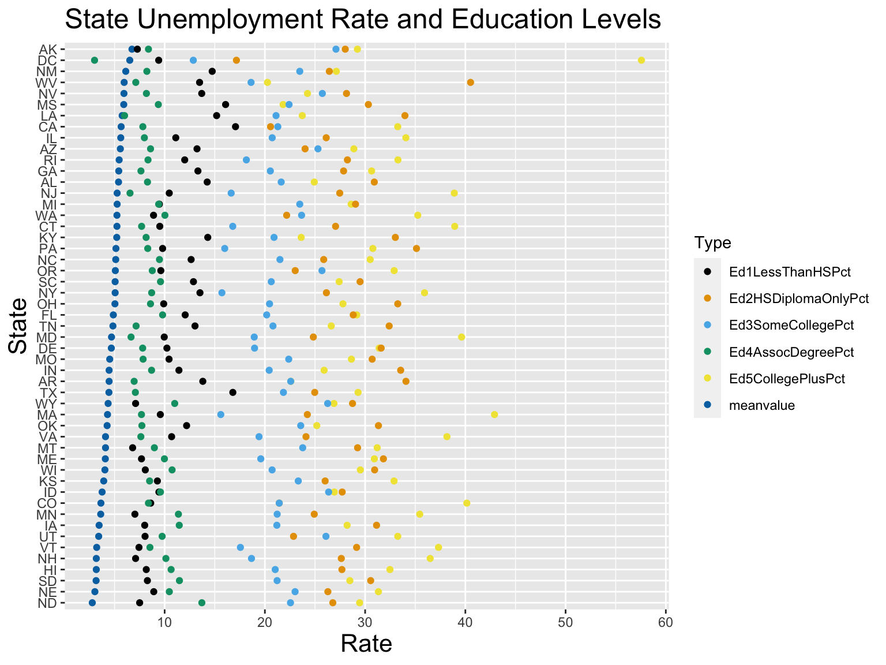
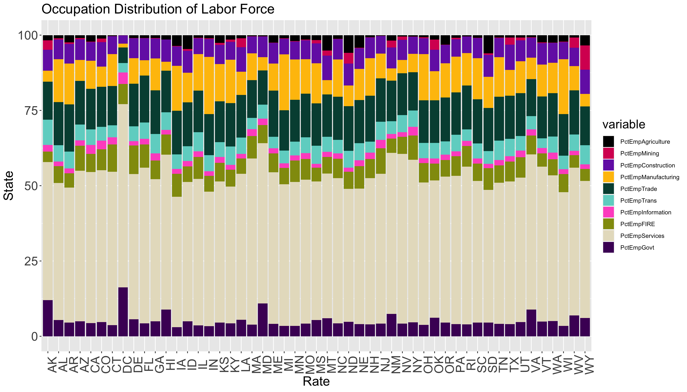
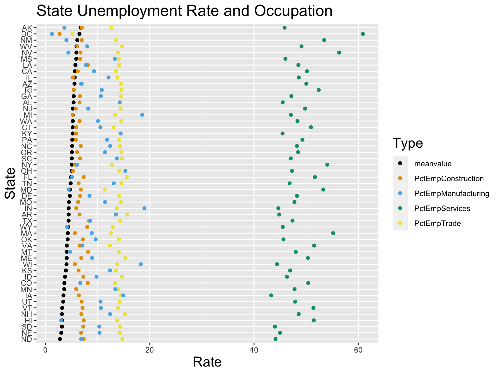
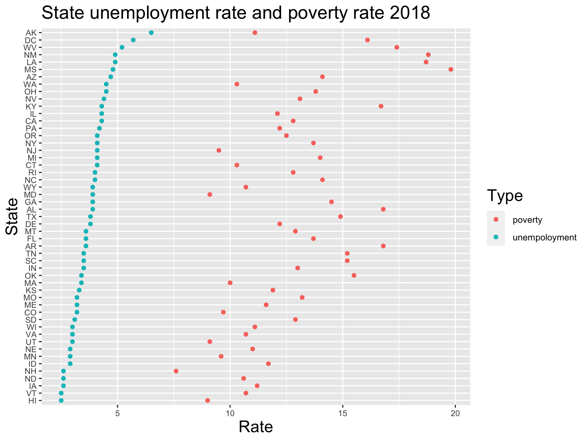
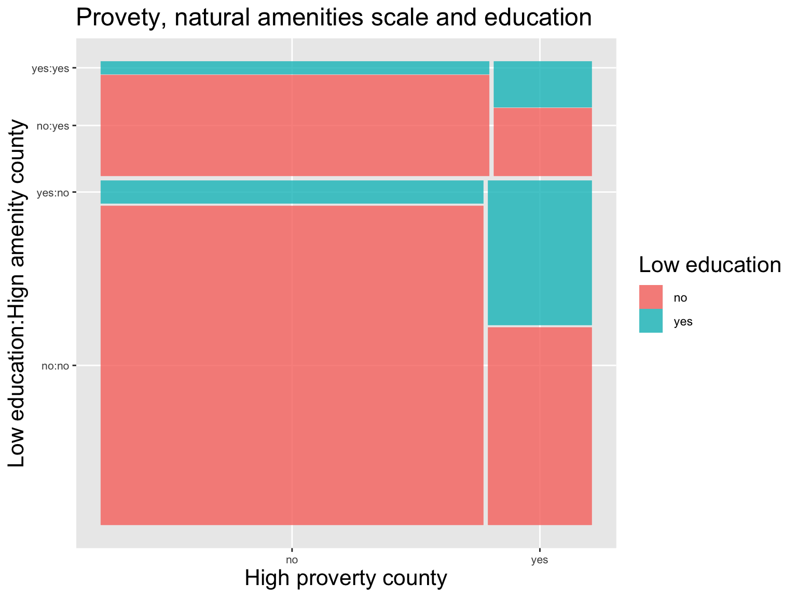
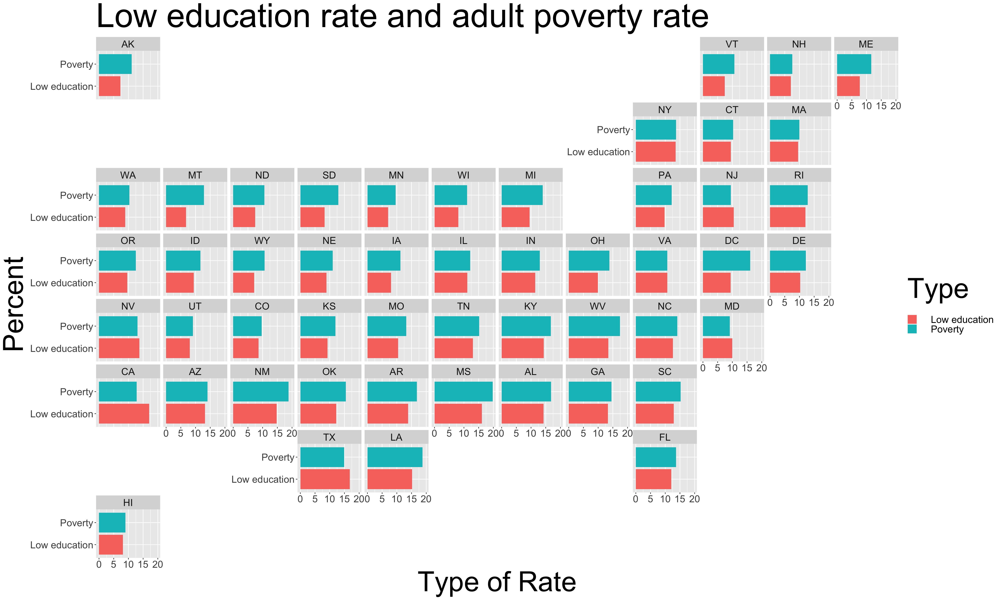

Chapter 5 Results
5.1 Geographical analysis
This part of the results aims to analyze how some of the important socioeconomic status varies across all the counties in the US. To perform these analyses, we used a dataset called counties from the “urbnmapr” package, which contains geographical information of each county (e.g longitude and latitude).
The maps do not contain PR(Puerto Rico) since the geographic information of PR is missing from the counties dataset. This does not significantly affect the overall analysis as our data for PR has a lot of missing values to start with. In addition, for all the graphs in this section, missing values are filled in red. Note that some data is missing but cannot be indicated on the graphs because the geographical data for these counties is missing as well (e.g the Prince of Wales-Outer Ketchikan and Skagway-Hoonah-Angoon county in AK(Alaska)).
Lastly, note that the color scale for each graph is different. For instance, poverty rate graph has a scale of 0-60%, while the unemployment rate graph has a scale of 0-24%.
5.1.1 Unemployment rate
This demonstrate how the unemployment rate varies by different counties and states respectively. Instead of using the number of unemployed people within each county, unemployment rate is used to avoid confusion since overall population varies significantly between states. The same rationale applies to some of graphs below too.
According to these maps, the general trend is that the states in the mid-US and above TX(Texas) tend to have lower unemployment rate, while counties with highest unemployment rate are in AK, AL(Alabama), CA(California) and AZ(Arizona). One thing to notice is that the exact unemployment rate does depend on the specific county. For example, the state average for SD(South Dakota) is very low, yet three of the counties have relatively high unemployment rate (above 12%). Moreover, some county-level data in AK is missing as discussed in Missing Data.
5.1.2 Education rate
In this section, “high education” refers to a 4-year college or an associate’s degree. For similar reasons as discussed above, the rate of high education is used instead of the total number of people with high education.
An important thing to note is that the data only accounts for adults 25 years old and over. Since it is possible and common to attain a college or associate’s degree before the age of 25, we should keep in mind that the data is not comprehensive.
The trend of high education is not as obvious as the unemployment rate; however, we can see that the states in the northern US has more counties with high percentages of people with high education when compared to the southern US. No county has more than 90% of people with high education, and the highest education rate exist in WA(Washington), MT(Montana), WY(Wyoming) and CO(Colorado).
5.1.3 Poverty rate
For similar reasons as discussed above, the poverty rate data is used instead of the total number of people in poverty.
Based on this graph, the general pattern is that more counties in the southern US states have relatively high poverty rate than the northern counties; again, poverty rate varies between counties with each state. For instance, although SD(South Dakota) seems to have low poverty rate in general, some of its counties have more than 50% poverty rate. This observation is somewhat consistent with the high education trend since it makes sense that counties with more people obtaining high education tend to have less poverty issues.
5.1.4 Per capita income
It is not very obvious as which part of the US has higher per capita income; however, if looking closely, it seems that the south-eastern counties in general and some of the western counties have lower per capita income. This pattern is very similar to that of the high education graph, which suggests that there might be a dependency relationship between education level and average income. It is also interesting to notice that for most of the states, there is one or more counties with a singificantly higher average income than the other counties.
We can also see that one of the counties (Rio Arriba) in New Mexico is missing per capita income data.
5.2 Dependency Relationship analysis
5.2.1 Dependency relation between Unemployment Rate and Education levels.

We are using this plot to illustrate the dependency relationship between unemployment rate and education level of each state. In order to present a more general trend, we decide to use data of each state, not an individual county.
Note:
1.This graph excludes PR; since we don’t have information on education levels on this state.
2.Several counties of AK and HI have missing values; however, since we are interested in finding possible trend between unemployment rate and education levels on the state level, the missing values will not significantly affect our result.
3.the average unemployment rate are arranging in a descending order; meaning state at the top has higher unemployment rate than state at the bottom.
Variables Used:
Ed1LessThanHSPct: indicating the the percentage of adults 25 and over with no high school diploma or GEM, from 2014 to 2018.
Ed2HSDiplomaOnlyPct: indicating the the percentage of adults 25 and over with a high school diploma or GED only, from 2014 to 2018.
Ed3SomeCollegePct: indicating the percentage of adults 25 and over with some college experience, from 2014 to 2018.
Ed4AssocDegreePct: indicating the the percentage of adults 25 and over with associate’s degree, from 2014 to 2018.
ED5CollegePlusPct: indicating the percentage of adults 25 and over with a 4-year college degree or more, from 2014 to 2018.
meanvlue The education level data is averaging from 2014 to 2018, so we decide to average the Unemployment rate from 2014 to 2018 and store this variable as meanvalue.
From the plot, we can see unemployment rate and Ed1LessThanHSPct seems to be positively related; which means, as the rate of adults with no high school diploma increases, the unemployment rate is likely to increase; moreover, we can also see a relatively significant negative relationship between unemployment and Ed4AssocDegreePct, which means as the rate of adults with associate’s degree increases, the unemployment rate is likely to decrease. other levels of education seem to have a relatively weak dependency relation with unemployment rate.
Without a doubt, we cannot assure the relationship between Unemployment rate and Education Levels; therefore, in order to verify the dependency relationship discussed above, further regression analysis is required.
5.2.2 Dependency relation between Unemployment Rate and Occupation Industries


We are using this plot to discuss unemployment rate by occupation. In order to present a more general trend, we decide to use data of each state, not an individual county.
Note:
1.Several counties of AK, NM and AV have missing values; however, since we are interested in finding a more general result on the state level, the missing values will not significantly affect our result.
2.The average unemployment rate are arranging in a descending order; meaning state at the top has higher unemployment rate than state at the bottom.
PctEmpAgriculture,PctEmpMining,PctEmpConstruction,PctEmpManufacturing,PctEmpTrade,PctEmpTrans,PctEmpInformation, PctEmpFIRE,PctEmpServices,PctEmpGovt represents the percentage of the civilian labor force 16 and over employment in Agriculture, Mining, Construction, Manufacturing, Wholesale and Retail Trade, Transportation,Information services, Finance and Insurance and Real Estate and rental, Services, Public Administration respectively.
meanvlue The percentage of labor force in different occupation is averaging from 2014 to 2018, so we decide to average the Unemployment rate from 2014 to 2018 and store this variable as meanvalue.
For research simplicity, we decide to take only four occupational industries.
According to our first plot, which indicates the proportion of labor force in different industries of each state, PctEmpServices, PctEmpConstruction, PctEmpTrade, PctEmpManufacturing are the ones with the relative high percentages for all states; therefore, we decide to take these four industries and check for dependency relationship with unemployment rate.
According the our second plot,we can see unemployment rate and PctEmpServices seems to be positively related; which means, as the percentage of civilian labor force 16 and over employment in Service increases, the unemployment rate is likely to increase.
Meanwhile, we also can see unemployment rate and PctEmpManufacturing seems to be negatively related; which means, as the percentage of civilian labor force 16 and over employment in Manufacturing increases, the unemployment rate is likely to decrease; similarly for PctEmpConstruction, and PctEmpTrade; however the dependency relation between PctEmpConstruction,PctEmpTrade and unemployment rate seems to be relatively weak.
Without a doubt, we cannot assure the relationship between unemployment and occupational industry proportion; therefore, in order to verify the dependency relation discussed above, further regression analysis is required.
5.2.3 Dependency relation between Unemployment Rate and Poverty Rate

We are using this plot to verify if there is a correlation between unemployment rate and poverty rate in 2018.
Variables used:
UnempRate2018: Unemployment rate, 2018.
PovertyAllAgesPct: Poverty rate, 2018.
Each state has two corresponding data points, the blues ones represent unemployment rate, and the red ones represent poverty rate.
Note: the blue ones are arranging in a descending order; meaning state at the top has higher unemployment rate than state at the bottom.
According to the plot, each state has a higher poverty rate than the unemployment rate. Holding unemployment rate in a descending order, the spread of poverty rate seems to be random; hence, there is no visible correlation between poverty rate and unemployment rate.
5.2.4 Dependency relation between poverty and natural amenities scale

It is quite counterintuitive to find no correlation between poverty rate and unemployment rate. Hence, we would like to explore about what factors may have some correlations with poverty rate. By exploring the data we find a variable called Hiamenity which indicates whether the natural amenities scale of a county is high or not. The natural amenities scale is a measurement on the environmental qualities of a county. A county with a high natural amenities scale means the environmental qualities in that area are pleasant. Intuitive, people will prefer to live in a county with high natural amenities scale. With this assumption, the populations in high natural amenities scale counties will increase gradually. Then these population increases may finally benefit the local economy. Therefore, we would expect relatively more poverty counties also have low natural amenities scale. In order to explore the relationship between the poverty and natural amenities scale of counties, we used mosaic plot. According to the mosaic plot above, the proportions of high poverty counties are very close between high natural amenities scale counties and other counties, which means that there is no strong correlation between poverty and natural amenities scale of a county. Then we introduced another factor which indicates whether a county is low education county or not. After comparing the proportion of low education counties in each group, we find that a low education county is also more likely be a high poverty county.
5.2.5 Dependency relation between poverty rate and low education rate

Then we further investigated the relationship between education and poverty rate. We defined the low education rate to be the percent of adults over 25 who have no high school diploma. And then we compared the low education rate and poverty rate of each state. According to those bar charts, the low education rate was generally close to the poverty rate of that state. In most of the northeast states, these two percentages are very close to each other. These findings confirmed the relationship between poverty rate and education.
5.3 Time series analysis

This graph shows the trend of unemployment rate in each state from 2010 to 2019. In this decade, the unemployment rate decreased uniformly in every state of the U.S. Besides the dropping in the percentage itself, the variance of the unemployment rate also decreased quite a lot. In 2010, the unemployment rates in Nevada and California were above 15% and the unemployment rate in Nebraska was only about 5%. Their differences were around 10%. But in 2019, the unemployment rates of different states were very similar. They were all around 3%. Although there were some small fluctuations on the unemployment rates in some central states, the unemployment rates decreased quite smoothly. In general the unemployment rates of most states reached their lowest point in 2019. But we can also notice that in Hawaii and some central states such as Iowa, Mississippi, Wisconsin, the unemployment rates increased in 2019.
5.4 Summary
Both of the poverty rate and unemployment rate are highly correlated with geographical factors. In particular, states in the mid-US tend to have lower unemployment rates and states in the northern US tend to have lower poverty rates. The unemployment rate is correlated with the education conditions and industrial structures in that state. And the poverty rate is also correlated with the low education rate. However, a high unemployment rate is not always accompanied by a high poverty rate. Despite the geographical differences, the unemployment rates of all states in the US have dropped a lot over the last decade.